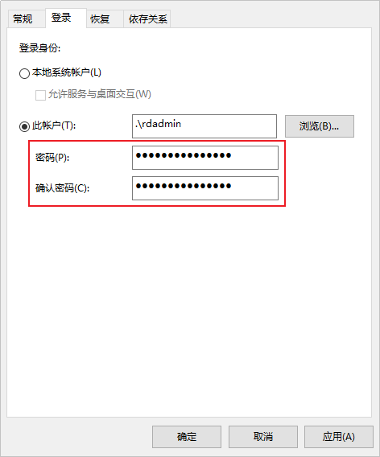

客户端作为OceanProtect与生产环境之间的数据连接组件，在备份和恢复过程中进行流程控制和数据传输。在进行数据备份和恢复前，需在主机上安装客户端。本节介绍通过登录待安装客户端的主机的后台，手动为其安装客户端。
注意事项
如果待安装客户端的Windows OS主机为域控制器，且需要在该域上的多台域控制器上安装客户端时，请逐一为域控制器安装客户端。
前提条件
- 请确保主机上未安装客户端。可在主机上执行sc query rdagent命令查询，如果回显提示指定的服务未安装，则表示未安装客户端。
- 请确保主机上的“C:\mnt”目录未被挂载。可在主机上执行mountvol命令查看。
- 已获取需要安装客户端的主机的IP地址，该IP地址必须与OceanProtect的备份网络连通。
- 已获取登录主机的用户及其密码。
- 客户端、OceanProtect以及待安装客户端的主机操作系统的安装语言请保持一致，否则客户端或OceanProtect上可能会出现多种语言或乱码。当出现该类情况时，请重新安装相同语言的客户端、OceanProtect或更换操作系统语言。
操作步骤
- 在OceanProtect管理界面下载客户端软件包，具体操作请参考下载客户端软件包。

如果在Windows Server使用Internet Explorer 11下载客户端软件包失败，可参考在Windows Server使用Internet Explorer 11下载客户端软件包失败进行处理。
- 确保待安装客户端的主机与OceanProtect设备时间一致。
- 对于OceanProtect X系列备份一体机，参考以下步骤查看OceanProtect设备时间：
- 选择“系统 > 基础设施 > 集群管理”。
- 在“备份集群”页签的“本地集群节点”区域，单击节点名称。
- 在弹出的“节点详情”界面，查看当前设备时间。
如果时间不一致，请修改待安装客户端的主机的时间，否则可能导致客户端安装失败，具体操作请参考如何修改主机时区和时间。
- 对于OceanProtect E6000备份一体机，参考以下步骤查看OceanProtect设备时间：
- 选择“系统 > 基础设施 > 集群管理”。
- 在“集群管理”界面，单击“查看集群详情”。
- 在弹出的“集群详情”界面，查看当前设备时间。
如果时间不一致，请修改待安装客户端的主机的时间，否则可能导致客户端安装失败，具体操作请参考如何修改主机时区和时间。
- 对于OceanProtect X系列备份一体机，参考以下步骤查看OceanProtect设备时间：
- 如果待安装客户端的Windows OS主机为域控制器，且需要在该域上的多台域控制器上安装客户端时，请执行本步骤，删除rdadmin用户。否则，请跳过本步骤。
可在主机上执行wmic computersystem get domainrole /value命令查询主机是否为域控制器，如果回显为DomainRole=4或者DomainRole=5，则表示为域控制器。
- 以系统管理员登录待安装客户端的主机。
- 在键盘上按“Win+R”，打开运行窗口。
- 输入“cmd”，进入命令提示符窗口。
- 执行以下命令，删除rdadmin用户。
net user rdadmin /delete
- 安装客户端。
- 以Administrators用户组中的账户登录待安装客户端的主机。
- 上传客户端软件包至主机并解压。
软件包名称中不能包含空格，否则将导致客户端安装失败。
- 进入软件包目录，安装软件。
- 如需指定用于注册的业务IP地址，请执行本步骤。否则，请直接跳转至4.c.ii。
- 进入“..\DataProtect_xxx_client_general_windows\DataProtect_xxx_client_general_windows\conf”目录，xxx为客户端的版本号。
- 打开“client.conf”文件，在“client.conf”文件末尾增加配置项eip=XXX.XXX.XXX.XXX，其中XXX.XXX.XXX.XXX请替换为用于注册的业务IP地址。
- 进行软件安装。
- 进入“..\DataProtect_xxx_client_general_windows\DataProtect_xxx_client_general_windows”目录，xxx为客户端的版本号。
- 双击“install.bat”，根据回显提示完成软件安装。
- 当回显如下信息时，请根据提示输入客户端的安装目录。如果不输入直接按“Enter”，则默认安装在“C:”。
"You need to enter the installation path (directly press 'Enter' use default installation path C:)." Please enter custom install path:
- 当回显类似如下信息时，请确认待安装客户端的主机与OceanProtect设备时间一致，并输入“y”。
The current host time and time zone are Thu 08/17/2023 17:17:34.87. Check whether the time and time zone are the same as those on DataBackup time:(y|n): Your choice:
- 当回显如下信息时，请输入下载客户端软件包时设置的私钥密码。
Please enter the private key password set on ProtectManager, you still have 3 chances: Enter password:
- 当回显如下信息时，设置rdadmin用户的密码。
Add User rdadmin Enter password:
- 对于1.5.0SPC19及后续版本，当回显如下信息时，请选择是否开启源端重删功能。
Whether enable dataturbo service:(y|n): Your choice:
如果输入“y”，则开启源端重删功能，请确保待安装客户端的主机的空闲内存大于2GB，系统会自动安装OceanStor DataTurbo。支持源端重删的操作系统请查看OceanProtect兼容性查询工具。
如果输入“n”，则不开启源端重删功能。在客户端安装完成后也可手动安装OceanStor DataTurbo，具体操作请参考安装OceanStor DataTurbo章节。
如果后续会为该客户端配置LAN-Free，请开启此功能。
开启源端重删后，系统会自动在客户端所在主机安装OceanStor DataTurbo并创建dataturbo用户，该用户的用户目录为“C:\Users\dataturbo”。请勿删除或修改此用户及用户目录。
开启源端重删功能后，请将system用户的SID（S-1-5-18）添加到“...\oceanstor\dataturbo\conf\whitelist”白名单中，并依次执行sc stop dataturbo和sc start dataturbo命令重启DataTurbo服务。
- 对于1.5.0SPC19及后续版本，当回显如下信息时，请根据实际场景选择是否使用EIP（Elastic IP）或NAT（Network Address Translation）转换后的IP地址。如果为EIP映射到虚拟私有云（VPC）IP场景，请输入EIP；如果待安装客户端的主机与OceanProtect通过NAT转换进行通信，且转换后的IP地址与转换前的IP地址为一一对应，则请输入NAT转换后的IP地址。
Check whether the agent ip will be redirected?(Such as EIP or the ip transformed by NAT):(y|n), default(n) Your choice:
- 当已安装客户端，如果升级到1.5.0SPC19及后续版本且需使用映射到VPC IP的EIP或NAT转换后的IP地址，则请先参考卸载客户端章节卸载客户端后，再重新执行本章节安装1.5.0SPC19及后续版本的客户端。
- EIP（Elastic IP）：弹性IP是基于云外网络（以下简称外网，云外网络可以是外网Internet也可以是企业内部局域网）上的静态IP地址，是可以通过外网直接访问的IP地址，通过NAT方式映射到被绑定的实例上。
当回显如下信息时，表示安装客户端成功。
The DataBackup ProtectAgent has been installed successfully.
- 当回显如下信息时，请根据提示输入客户端的安装目录。如果不输入直接按“Enter”，则默认安装在“C:”。
- 如需指定用于注册的业务IP地址，请执行本步骤。否则，请直接跳转至4.c.ii。
- 如果安装客户端的Windows OS主机为域控制器，客户端安装成功后，请执行本步骤，更新该域其他已安装客户端的域控制器中以rdadmin用户登录的服务的密码。否则，请跳过本步骤。
- 以系统管理员登录已安装客户端的主机。
- 在键盘上按“Win+R”，打开运行窗口。
- 输入“services.msc”，打开服务窗口。
- 鼠标右键单击选择以rdadmin用户登录的服务，选择“属性”。
- 在“登录”页签更新密码，并单击“确定”。

- 右键单击已更新rdadmin用户密码的服务，选择“重新启动”。
当服务状态为“正在运行”时，则表示更新成功。
- 安装客户端后，OceanProtect管理界面会自动发现该客户端，可执行以下操作进行检查。
- 选择“保护 > 客户端 > 客户端”。
- 查看已安装客户端的主机是否已存在于OceanProtect管理界面。如果在OceanProtect管理界面上未发现已安装客户端的主机，请联系系统管理员为该用户进行资源授权。
- 对于1.5.0版本，请执行以下操作：
- 在“客户端”界面该客户端所在行，单击“更多 > 资源授权”。
- 将该客户端授权给相应的用户。
- 对于1.6.0及后续版本，请执行以下操作：
- 选择“系统 > 安全 > RBAC”。
- 在“用户”页签相应的用户所在行，单击“修改”。
- 在“修改用户”界面，单击“下一步”。
- 单击“创建资源集”。
- 设置资源集名称，并在“客户端”页签选择对应的客户端。
- 单击“确定”。
- 勾选6.b.v中创建的资源集，并单击“下一步”。
- 单击“完成”。
- 对于1.5.0版本，请执行以下操作：
- 重复以上步骤为其他主机安装客户端。
主机注册成功后请等待5分钟再使用该客户端。
后续操作
成功安装客户端后，如果您需释放系统空间，可以删除软件包存放目录。